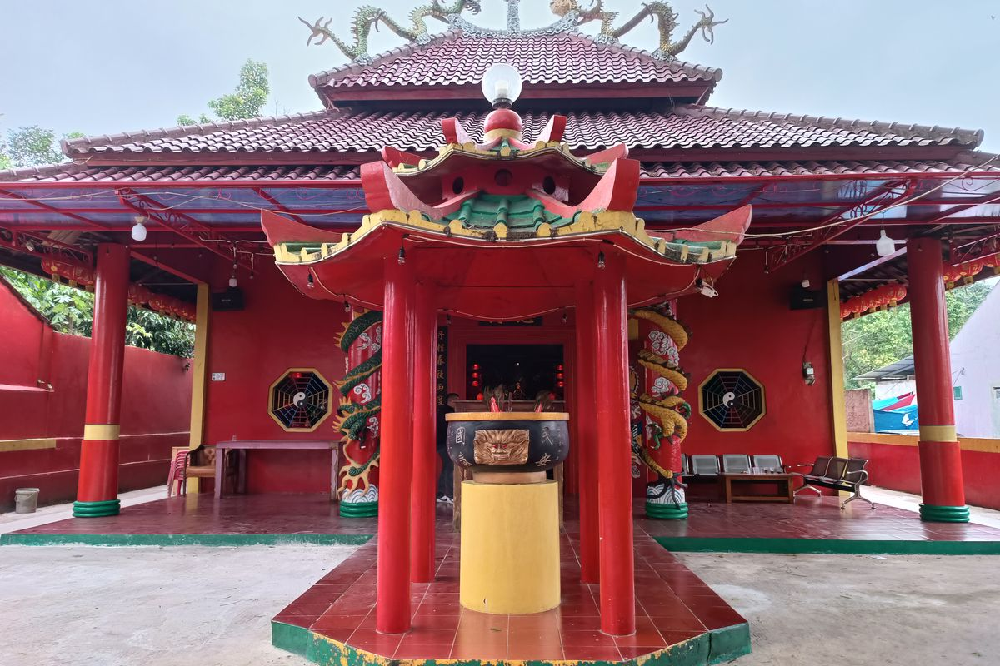

WorshipFinder
Beranda
Data
Profil Masjid
Profil Gereja Katolik
Profil Gereja Protestan
Profil Pura
Profil Vihara
Profil Kelenteng
Kontak Kami
Logout
Temukan Tempat Ibadah di Sekitarmu dengan Mudah
Pilih Rumah Ibadah
Gereja Katolik
Gereja Protestan
Kelenteng
Masjid
Pura
Vihara
Tipologi
Masjid Raya
Masjid Jami
Musholla
Masjid Agung
Katedral
Kapel
Paroki
Stasi
GPIB
GPI
GKI
HKBP
GKP
Maha Viara
Vihara Tionghoa
Vihara Lokal
Kahyangan Jagat
Tirta
Dang Kahyangan
Kawitan
Swagina
Pilih Provinsi
Aceh
Bali
Banten
Bengkulu
DI Yogyakarta
DKI Jakarta
Gorontalo
Jambi
Jawa Barat
Jawa Tengah
Jawa Timur
Kalimantan Barat
Kalimantan Selatan
Kalimantan Tengah
Kalimantan Timur
Kalimantan Utara
Kepulauan Bangka Belitung
Kepulauan Riau
Maluku
Maluku Utara
Nusa Tenggara Barat
Nusa Tenggara Timur
Papua
Papua Barat
Papua Barat Daya
Papua Pegunungan
Papua Selatan
Papua Tengah
Riau
Sulawesi Barat
Sulawesi Selatan
Sulawesi Tengah
Sulawesi Tenggara
Sulawesi Utara
Sumatera Barat
Sumatera Selatan
Sumatera Utara
Pilih Kabupaten
Cari
MASJID
Lihat Detail
GEREJA KATOLIK
Lihat Detail
PURA
Lihat Detail
VIHARA
Lihat Detail
GEREJA PROTESTAN
Lihat Detail

KELENTENG
Lihat Detail
Peta Sebaran Tempat Ibadah